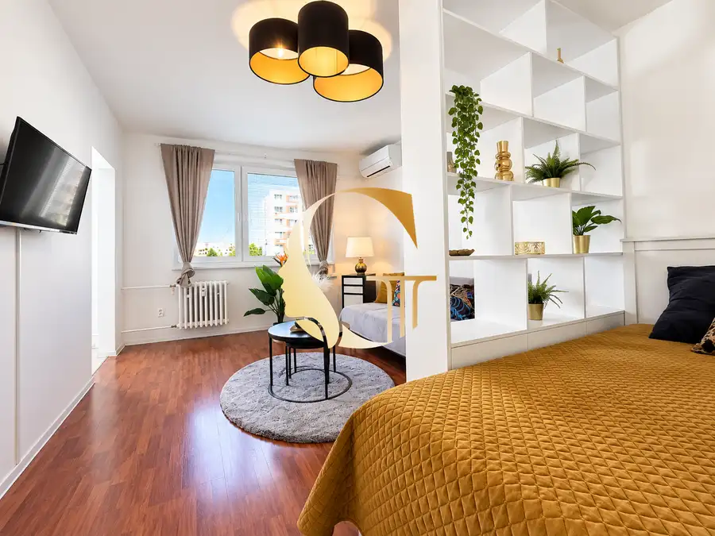
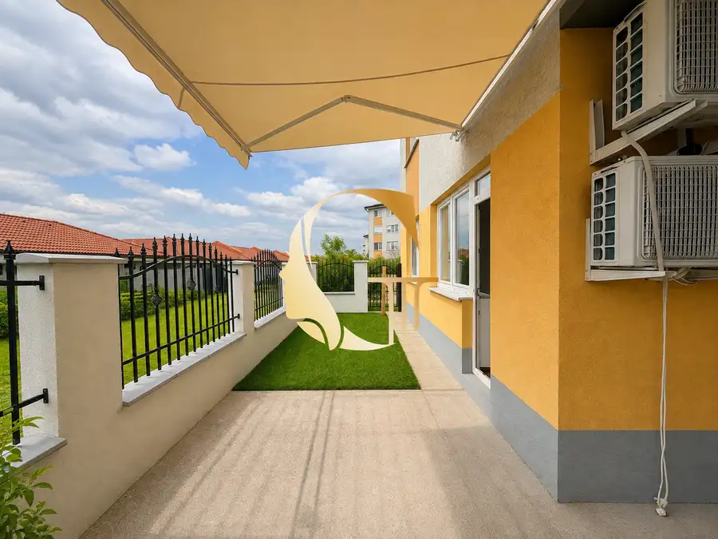
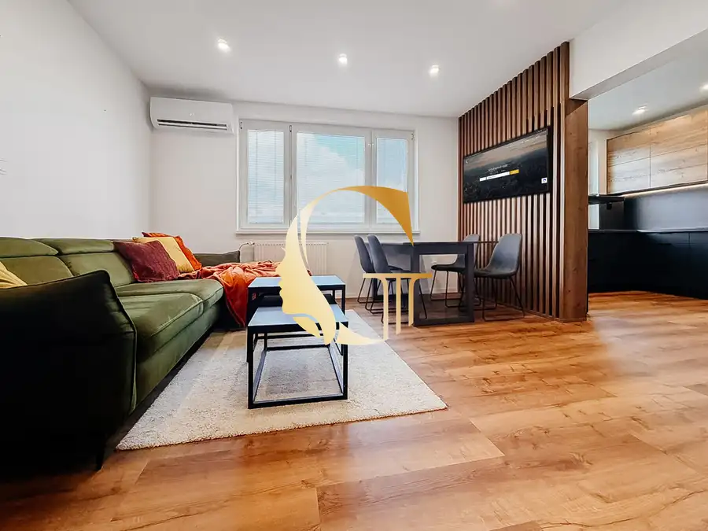

GODDESS PROPERTY - exkluzívne - PREDAJ - moderný - samostatne stojaci 4-izbový rodinný DOM 106 m2 - pozemok 292 m2 - Majerské Záhrady – VRAKUŇA
Vrakuňa, Bratislava
- Plocha94 m²
- StavNovostavba
- VlastníctvoOsobné
- Energetická triedaB
O nehnuteľnosti
GODDESS PROPERTY Vám exkluzívne predstavuje na PREDAJ SAMOSTATNE STOJACI moderný 4-izbový rodinný dom situovaný v Bratislave – Majerské Záhrady vo Vrakuni.Tehlová NOVOSTAVBASAMOSTATNE STOJACI DOMZastavaná plocha : 106 m2Pozemok vrátane parkovacích miest, domu a záhrady : 292 m2- 4 izby- CELOROČNÉ BÝVANIE- Financovanie prostredníctvom hypotekárneho úveru je možné ! ( majiteľ mal už na dome kedysi hypotéku )- Na liste vlastníctva vedený ako záhradný domOrientácia : sever a juh DISPOZÍCIA:- vstupná CHODBA so vstavaným rooll-doorom- 1x kúpeľňa so sprchovym kútom, WC, elektrickým KOTLOM s prípravou na pripojenie PRÁČKY- 1x samostatná IZBA so vstavanou skriňou - OBÝVAČKA s rozkladacím gaučom, stolíkom, skrinkou pod TV, jedálenský stolom a stoličkami a s KLIMATIZÁCIOU. - Z obývačky je výstup na TERASU- KUCHYŇA vybavená vstavanými spotrebičmi ( umývačka riadu, chladnička a mraznička, indukčná varná doska a elektricka rúra ) - 1x SPÁLŇA s manželskou posteľou 180 cm x 200 cm so vstavanou skriňou a skrinkou pod TV, KLIMATIZÁCIA a výstupom na TERASU- 1x samostatná IZBA so vstavanou skriňou - 1x KÚPEĽŇA so sprchovym kútom, WC a vstavanými skrinkami - ďalšia vstupná CHODBA so vstavaným rooll-dooromZÁHRADA: - upravená záhrada- vlastná STUDŇA- dve štýlové pergoly na relax a rodinné posedenia- drevený ZÁHRADNÝ DOMČEK s výmerou približne 10 m2 napojený na elektrinu PARKOVANIE: pre 3 až 4 autá priamo na pozemku pred domomKÚRENIE: elektrický kotol a elektrické podlahové kúrenie ( elektrina náklad 150€/mes )NÁKLADY : komplet ( elektrina 150€, voda 10€, žumpa 10€, internet 20€ = 190€ / mes )INŽINIERSKE SIETE : - Dom je napojený na ŽUMPU so signalizáciou naplnenia v stupne chodbe. KANALIZÁCIA a mestský vodovod sú podľa plánov pripravené na realizáciu približne na jar 2027 (dostupná aj zápisnica)- VODOVODNÁ PRÍPOJKA- ELEKTRINA A OPTICKÝ INTERNET - vlastná STUDŇANehnuteľnosť s INVESTIČNÝM POTENCIÁLOM: Veľkou pridanou hodnotou tejto ponuky je možnosť budúceho rozdelenia domu na dve samostatné bytové jednotky.To otvára viacero možností využitia:- bývanie pre dve generácie,- kombinácia bývania a podnikania,- prenájom domu, alebo rozdelenie domu na dve bytové samostatné jednotky (PREDPRÍPRAVA)- dlhodobá investícia s rastúcou hodnotou.Takéto nehnuteľnosti sú v Bratislave čoraz vyhľadávanejšie, preto predstavujú stabilnú investíciu aj do budúcnosti, kde každá časť vie ísť do PRENÁJMU za cca 1200€.LOKALITA:Majerské Záhrady patria medzi pokojné rezidenčné štvrte, ktoré ponúkajú ideálnu rovnováhu medzi mestským životom a súkromím.V pešej alebo krátkej dostupnosti nájdete:- materské školy a školy,- potraviny a kompletnú občiansku vybavenosť,- zastávky MHD,- rýchle napojenie na diaľnicu vo všetkých smeroch,- centrum Bratislavy len niekoľko minút autom,- Lesopark Vrakuňa, cyklotrasy, detské ihriská a množstvo zelene na každodenný oddych.VÝHODY DOMU:- výnimočná lokalita v rámci Bratislavy- moderný interiér bez ďalších investícií- kompletne zariadený- 2 kúpeľne a 2 klimatizácie- parkovanie pre viac vozidiel- krásne upravená záhrada- 2 pergoly a záhradný domček- možnosť vytvorenia dvoch bytových jednotiek- ideálne rodinné bývanie aj investíciaNÁZOR REALITNEJ KANCELÁRIE:Táto nehnuteľnosť je ideálnou voľbou pre mladú RODINU, ktorá túži po vlastnom dome so záhradou, ale zároveň predstavuje atraktívnu INVESTÍCIU s možnosťou rozdelenia na dve samostatné bytové jednotky, kde každá časť vie ísť do PRENÁJMU za cca 1200€.CENA NEHNUTEĽNOSTI : 395.000€Kompletné sprocesovanie kúpy nehnuteľnosti vrátane zabezpečenia financovania a iných náležitostí zabezpečuje GODDESS PROPERTY, čiže celý proces je plynulý a bez starostí. V prípade záujmu ma neváhajte kontaktovať a rada Vás osobne prevediem Mgr. Bc. Eliška DANKO, +421 903 399 155 elisabeth.danko@gmail.comNehnuteľnosť bola nafotená oddelením našej spoločnosti, veľmi radi Vám pomôžeme pri efektívnom a dôstojnom predaji či prenájme aj Vašej nehnuteľnosti. Budeme sa tešiť, keď nás budete nezáväzne kontaktovať. Fotografie a text sú autorským dielom a majetkom spoločnosti GODDESS PROPERTY s.r.o.
Parametre
| Bezpečnosť | Bezpečnostné dvere |
|---|---|
| Doprava | Diaľkový autobus, Letisko, MHD, Vlak, Diaľnica, Cyklistická infraštruktúra |
| Druh | Rodinný dom |
| Druh domu | Bungalov |
| Dátum zverejnenia | 6. 8. 2026 |
| Energetický certifikát budovy | B |
| Energie | 190 |
| Orientácia | Severná, Južná |
| Plocha pozemku | 292 m² |
| Počet izieb / miestností | 4 |
| Počet kúpeľní | 2 |
| Počet nadzemných podlaží | 1 |
| Počet spální | 3 |
| Prístupová komunikácia | Asfaltová |
| Rok kolaudácie | 2021 |
| Rok výstavby | 2021 |
| Stav nehnuteľnosti | Novostavba |
| Telekomunikácie | Optická sieť, Internet |
| Terén pozemku | Rovinatý |
| Typ | Predaj |
| Typ konštrukcie | Tehlová |
| Vlastníctvo | Osobné |
| Vybavenie | Sklad, Vyhradené parkovanie, Záhrada, Bezbariérový prístup, Altánok / posedenie, Záhradný domček |
| Vybavenie objektu | Nadštandardné |
| Vykurovanie | Podlahové, Klimatizacia |
| Zariadenie | Zariadené kompletne |
| Zastavaná plocha | 106 m² |
| Úžitková plocha | 94 m² |
Kde to je


Mohlo by Vás zaujímať

BytNové10 166 000 €GOODESS PROPERTY - exkluzívne - PREDAJ 1 izbový byt 36 m2 s KLIMATIZÁCIOU - moderne zariadený - komora a pivnica murovaná - Toryská ulica - VRAKUŇA Vrakuňa, Bratislava 1-izbový36.3 m²3. podlažie GODDESS PROPERTY ponúka exkluzívne na PREDAJ moderný, slnečný ZARIADENÝ 1 izbový byt s KLIMATIZÁCIOU na Toryskej ulici vo VRAKUNI. Byt prešiel…
BytNové10 214 900 €GODDESS PROPERTY - exkluzívne - PREDAJ 2 izbový BYT 63 m2 - PREDZÁHRADKA 33 m2 - rekonštrukcia - pivnica - M. R. Štefánika - Most pri Bratislave Most pri Bratislave 2-izbový63 m²1. podlažie GODDESS PROPERTY | EXKLUZÍVNE | PREDAJ | 2-IZBOVÝ BYT 63 m2 S VEĽKORYSOU PREDZÁHRADKOU 33m2 | pivnica | rekonštrukcia | M.R. Štefánika | Most pri…
BytRezervované10 355 000 €GODDESS PROPERTY - - PREDAJ 4 izbový byt 85 m2 - LOGGIA - moderný - kompletná rekonštrukcia - PLANCKOVA ulica - Petržalka Petržalka, Bratislava 4-izbový85 m²7. podlažie REZERVOVANÉ!GODDESS PROPERTY ponúka exkluzívne na PREDAJ moderný, slnečný 4 izbový byt na Planckovej ulici na začiatku Petržalky.Byt prešiel…